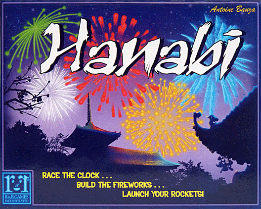
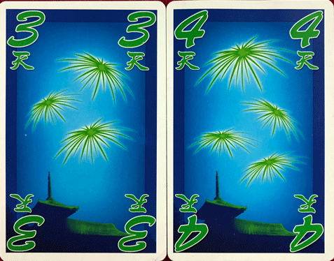
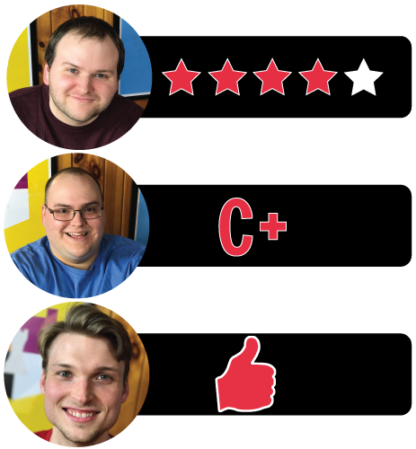

This week, Board Crazy reviews Hanabi, the co-op card game designed by Antoine Bauza and published by R&R Games, Asmodee, and many more. In Hanabi, you work together with your teammates to try to put on a fireworks show for a crowd of people. Keep reading to check out our thoughts on Hanabi!

D reviews Hanabi
 (Author’s
note: this review is meant to accompany our gameplay video and will not
go in-depth on the game’s rules. If you’re interested in learning how
the game is played, please watch the video. It’s not bad.)
(Author’s
note: this review is meant to accompany our gameplay video and will not
go in-depth on the game’s rules. If you’re interested in learning how
the game is played, please watch the video. It’s not bad.)
Antoine Bauza’s Hanabi is maybe the ideal family game. It’s easy to understand and plays quickly, so you don’t need to commit a lot of time to either learning or playing the game. This should come in handy for busier people who have limited opportunities to get together with their friends or family. And while Hanabi is simple enough that children should be able to enjoy it, it’s not so simple that it becomes dull for adults. There is a nice bit of challenge and strategy present in this game, and you really need to use your wits if you want to get a good score. Also, it’s a cooperative game, so there (probably) shouldn’t be any hurt feelings at game’s end.
There are duplicates of each card except for fives. Here are the two yellow fours in the deck.
I don’t have many criticisms of Hanabi, and it’s not a surprise to me that the game won the prestigious Spiel des Jahres award in 2013, but there are a couple of things that I don’t love. My primary complaint is in regards to the “giving a piece of information” action. Not the action itself, but how you carry it out: the active player points to the card(s) they are referring to in another player’s hand. This sounds straightforward enough, but it’s actually quite a cumbersome mechanic in an otherwise well-designed game. In reality, communicating which cards you’re referring to can be kind of difficult, to the point where sometimes just reaching over and physically touching them is the clearest method. I’m not sure what the solution is here – maybe this is actually the best way to do this, but I don’t love it.
My other main criticism is more minor, but has been responsible for a lost game for us in the past: you have to play this game in a bright room. The blue and green cards can be very hard to differentiate in dimmer light, and I’m saying that as someone with very good vision. I imagine people with poorer vision or color-blindness would find this game very difficult to enjoy in the wrong conditions. This isn’t a hard thing to account for, assuming you’re playing indoors, but it’s not nothing. Simply changing one of those colors to another, more distinct one would have been easy enough. Otherwise, I find this game to be extremely enjoyable.
Simply keeping your cards facing away from you is a fun twist. We’ve had to restart games because of the instinct to look at the cards you’re dealt, so it takes a bit of getting used to, but once you do, it’s a really exciting mechanic. I also like that the game’s rules are explicitly hands-off when it comes to what you can communicate to your fellow players. It states the way the game is intended to be played, but I like that it seems to acknowledge the fact that, as a tabletop game, the rules are not unbreakable. So for those looking for a more casual experience, that is an option. The game also includes a suit of rainbow-colored cards that are used for a number of advanced and variant rules that are presented in the rulebook. This adds quite a bit more replayability to the game than might otherwise be present.
So, Hanabi isn’t perfect, but I’m glad I own it and I’m sure we’ll keep playing it in the future. It’s a nice, little package that I highly recommend to anyone looking for a shorter, simpler game that doesn’t take up a lot of space, or to anyone who considers themselves a co-op enthusiast.
D’s Rating: Four Stars out of Five.
Will reviews Hanabi
 It’s
easy for me to see why Hanabi won the 2013 Spiel des Jahres award (Game
of the Year). A lot of it has to deal with the game’s pleasant
simplicity, which seems to be something the judges of the award deeply
value. Simplicity is something that I, as a tabletop gamer, tend to
appreciate and prefer as well, so one would think that Hanabi would be
right up my alley. Yet surprisingly, I didn’t like this game as much as I
expected to. Objectively, Hanabi is a solid card game, but it’s too
hollow from an emotional standpoint for it to rank as an all-time great.
It’s
easy for me to see why Hanabi won the 2013 Spiel des Jahres award (Game
of the Year). A lot of it has to deal with the game’s pleasant
simplicity, which seems to be something the judges of the award deeply
value. Simplicity is something that I, as a tabletop gamer, tend to
appreciate and prefer as well, so one would think that Hanabi would be
right up my alley. Yet surprisingly, I didn’t like this game as much as I
expected to. Objectively, Hanabi is a solid card game, but it’s too
hollow from an emotional standpoint for it to rank as an all-time great.
Conceptually, I really dig Hanabi because it’s unique and forces players to act against their instincts. Gameplay-wise, it’s very easy to grasp – you’re attempting to complete sets of fireworks cards in order to attain the highest possible score. However, you may not look at your own cards, and therein lies Hanabi’s rub. You actually have to hold your hand face out so that the other players can see the numbers and colors on your cards. If you want to achieve a high score, you’ll need to work with members of your group by giving them clues as to which cards they have in their hand. This is what I meant when I said you need to act against your instinct – you’re going to want to look at your cards. I even made the mistake of doing so in one of our earlier sessions, and we had to shuffle up and start over. That was undoubtedly frustrating, but the mystery of what cards you hold ultimately becomes the best part of the experience.
This is an example of a perfect game in Hanabi, which would be worth 25 points.
In the last paragraph, I mentioned that you need to offer clues to your group in order to win, but I didn’t mention that you could actually run out of them. In Hanabi, clues are represented by blue counters, of which there are only eight. Once the eight counters are spent, players will need to discard cards in order to earn them back. The importance of the blue clue counters is immense, so they add a great deal of strategy to the game. It’s actually quite stressful when you’re running low on hints, and it sometimes forces a player to discard or play a card when they don’t want to, which can create a small amount of chaos. This is the most successful mechanic in Hanabi, as the management of clue counters ends up leading to high stakes, high entertainment moments.
While we’re on the topic of clues, I should state that memorization is a huge part of this game. You’ll need to memorize every clue you receive, and forgetting one can often lead to disastrous moments. Sometimes you’ll need to give or receive the same clue twice, thus adding importance to the blue counters. Listening to the other players recount which cards they have in their hand is often the most interesting part of Hanabi. You’d be surprised how easy it is to forget a clue that was provided to you mere moments ago. That leads to hilarious moments that are simultaneously contentious, but these conversations rarely get too heated. All in all, Hanabi makes good use of its mechanics and pieces, and it embraces human error in a satisfying manner.
An example hand in Hanabi. You start with five cards and face them away from yourself.
On the other hand, it all falls apart in the end, and this is where the game loses me. I hate that when it’s all said and done, you count up your highest numbers and correlate that score to get some kind of ranking. “So our score tells us that we’re really good at fireworks? Yay, I guess”. That’s basically what I say in my head at the end of every game of Hanabi. There are moments of excitement and tension throughout the gameplay, but to have it end on such a resounding thud… it undercuts all of the emotions. And playing again with the goal of attaining a higher score is only compelling for so long until you no longer give a crap. To be fair, I don’t know how to fix this problem and make the ends justify the means, so to speak. But then again, that’s not on me – I’m only here to state my opinions. And in my opinion, the end of Hanabi sucks.
A lackluster conclusion is not my only issue with this game – I also don’t appreciate the flimsy cards or the fact that the green and blue cards are too difficult to distinguish from one another. Ultimately though, those negatives pale in comparison to the most important issue here: Hanabi is not emotionally resonant enough for it to rank among the greats. The excitement one feels in the midst of a session is definitely enjoyable, but it’s also fleeting. For me, once the session ended, I didn’t have that much desire to go back and play again, despite the fact that the mechanics were well designed and led to the occasional moment of hilarity. I’m not saying that Hanabi is a bad game; it’s a good game with some noticeable flaws. It’s kind of like the TV show that keeps you intrigued until the final season, but once it’s over, you find yourself wondering why you ever cared so much, à la Lost or Dexter.
I give Hanabi a: C+
Graham reviews Hanabi
 I
never really saw the appeal of fireworks shows – they’re fun for about
45 seconds, but then they get repetitive and boring. Maybe I just have a
short attention span, or maybe fireworks just aren’t fun unless you’re
setting them off yourself. Well, the 2013 Spiel des Jahres, Hanabi, is a
whole lot more fun than any fireworks shows I’ve ever been to.
I
never really saw the appeal of fireworks shows – they’re fun for about
45 seconds, but then they get repetitive and boring. Maybe I just have a
short attention span, or maybe fireworks just aren’t fun unless you’re
setting them off yourself. Well, the 2013 Spiel des Jahres, Hanabi, is a
whole lot more fun than any fireworks shows I’ve ever been to.
There is only one 5 for each color, so make sure you let your teammates know when they have one.
In Hanabi, you try to put on a fireworks show for a number of spectators. The rules are simple – you hold five cards that face away from you, so that your teammates can see your cards but you can’t. The cards, which represent the fireworks, have a color and a number. Your goal, as a team, is to place each card by color in order starting with one and ending with five. On your turn, you can choose between discarding one of your cards, playing one of your cards, or giving a piece of information to your teammates. You do this until the firework deck is empty.
The last bit about giving out information is really what makes this game unique and fun. You are limited in what kind of information and how much information you can give to your companions. This is my favorite part about Hanabi – the more you play with a specific group of people, the better you get. You start to develop a rapport with each other and understand the timing and type of hints your teammates give out. This familiarity with your teammates is fundamental to getting better scores. This is different than other cooperative card games I’ve played in the past, like The Grizzled. You can check out our reviews of The Grizzled and The Grizzled:At Your Orders! for more elaboration. In The Grizzled, you can sit down and win your first time with a bunch of beginners. You don’t really need to know your teammates to be able to succeed. That would never happen in Hanabi (you would have to get extremely lucky). The downside to this is that after quite a few times playing Hanabi, it loses its replayibility. Once you and your teammates are in sync, you should be able to score 20+ every time (Maximum score is 25).
You are only given 8 clues to utilize during the game. However, you can get a clue counter back by discarding a card or completing a card column.
Other than its diminishing replayibility, I don’t have many criticisms for Hanabi. A few minor things come to mind, such as the colors they used for green and blue that can be very tough to distinguish between in dim lighting. The last thing that comes to mind is that another important skill in Hanabi is memory. Trying to remember all of the information that your teammates give you can become very daunting. Now, this isn’t something that was designed poorly. The rules even give you advice on actions you’re allowed to do in order to remember your cards, but I personally don’t like memory games. So if you love memory games, then you will love this game, and if you don’t, then maybe look for something else.
Overall, the main gameplay of Hanabi is fun, and it’s easy to sit down, play 3 or 4 times in an hour, and start developing that rapport with your teammates. Despite its few flaws, Hanabi is a nicely designed game. I give it one thumb up.

Leave a Reply
You must be logged in to post a comment.